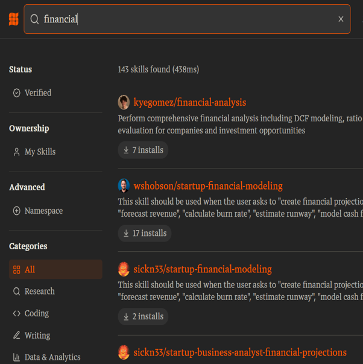

Wissensbasis
Nachschlagewerk zu LLMs, Modellen, Prompts, Tools, BPMN, RPA und Berufsrecht
Was Sie in dieser Wissensbasis finden
- Sieben kompakte Nachschlage-Sektionen zu allen Themen, die in den Workshops 1 und 2 verwendet werden,
- Lay-Erklärung jedes Fachbegriffs vor dem technischen Detail,
- Verweise auf die Originalliteratur und zu den passenden Workshop-Stellen.
Diese Seite ist absichtlich als ein einziges, durchsuchbares Dokument angelegt. Versionsdatum am Anfang jeder Sektion. Stand: 09.05.2026.
LLM-Grundlagen
Ein Large Language Model ist ein statistischer Textgenerator, der das jeweils nächstwahrscheinliche Wort vorhersagt — nicht mehr und nicht weniger. Bild: sehr gut geübter Autovervollständiger, der zu einem Anfang den passenden Folgetext rät. Technisch: tiefes neuronales Netz mit Transformer-Architektur, trainiert auf großen Textmengen.
Drei Kernunterscheidungen, die durchgehend in beiden Workshops auftauchen.
Reasoning vs. Instant
Instant-Modelle antworten direkt; Reasoning-Modelle denken zwischen Frage und Antwort sichtbar oder unsichtbar nach (Chain-of-Thought). Reasoning lohnt sich bei Mehrschritt-Aufgaben, ist langsamer und teurer.
Werkzeuge und Harness
Harness — der Werkzeugring um das LLM herum: Web-Search, Code-Interpreter, Datei-Upload, Memory, Tool-Calling. Die Antwortqualität hängt fast immer mehr vom Harness ab als vom Modell allein (Grootendorst, 2025).

Drei Lizenz-Tiers
Free (0 €): begrenzter Kontext, oft kein Web-Search, keine vertraulichen Daten. Casual (~20–30 €/Monat): Pro-Tier von Claude, ChatGPT, Gemini. Professional (~100–200 €/Monat): Team-/Enterprise-Tiers mit Datenschutzgarantien, längeren Kontexten, mehr Tools. Faustregel: Mandantenarbeit nicht im Free-Tier.
Querverweise: Workshop 1, Block A · Übung 1.
Welches Modell?
Schlanke Vergleichsseite analog zu Békes (2026), ergänzt um drei Lizenz-Tiers und einen Berufsrechts-Abschnitt.

Führende Modelle (Stand 05/2026)
[Platzhalter — Tabelle: Modellname · Anbieter · Stärken · Lizenz-Tier · Web-Search · Datei-Upload · Memory.]
Vergleichstabelle Allgemeine Wissensarbeit
[Platzhalter — Vergleich: Claude Pro · ChatGPT Plus · Gemini Advanced · Perplexity Pro entlang Antwortqualität, Quellen-Tools, Kontextlänge, Datenschutz.]
Vergleichstabelle Datenanalyse
[Platzhalter — Vergleich: Claude Analysis · ChatGPT Data Analysis · Gemini in Sheets · Copilot in Excel.]
Vergleichstabelle Coding
[Platzhalter — Vergleich: Claude Code · GitHub Copilot · Cursor · Windsurf.]
Empfehlung (opinionated)
[Platzhalter — eine begründete Default-Empfehlung pro Aufgabentyp im Tax-/Audit-/Advisory-Kontext.]
Querverweise: Workshop 1, Block A · Übung 1.
Prompt-Muster
Sieben Bausteine eines belastbaren Prompts: Rolle · Zielgruppe · Aufgabe · Tonalität · Constraints · Format · Iteration. Anker: Project Management Institute (2024).
Standard-Prompt-Skelett für Tax/Audit
[Platzhalter — Beispiel-Skelett mit Lay-Erklärung pro Baustein, drei Constraint-Beispielen und einem Format-Beispiel als Memo-Vorlage.]
Iteration als Pflicht
Ein Prompt ist nie fertig. Drei Iterationen sind Mindeststandard, dokumentiert mit was geändert · warum · Effekt auf den Output.
Tools und Plattformen
Drei Tool-Klassen
Chat-Plattformen (Claude, ChatGPT, Gemini, Perplexity), eingebettete Assistenten (Copilot in Microsoft 365, Gemini in Google Workspace), agentische Plattformen (Custom GPTs, Claude Projects, Gems, Agents-Framework).
Datenschutz-Hinweis
[Platzhalter — Übersicht der Datennutzungsregeln pro Anbieter, mit Verweis auf jeweilige Trust Center.]
Querverweise: Workshop 1, Block A · Übung 1.
BPMN-Grundlagen
Business Process Model and Notation — eine bildliche Sprache, in der Geschäftsprozesse mit standardisierten Symbolen gezeichnet werden. Bild: eine Notensprache für Prozesse — dieselben Symbole bedeuten überall dasselbe. Technisch: OMG-Standard, derzeit Version 2.0.2 (Object Management Group, 2014).
Kernsymbole
Aktivität (abgerundetes Rechteck) · Ereignis (Kreis) · Gateway/Entscheidung (Raute) · Sequenzfluss (Pfeil) · Pool/Lane (Schwimmbahn).
Prozessdenken vor Werkzeugwahl
Ein gutes BPMN-Modell zwingt zur Klärung wer macht was wann mit welchem Input und welchem Output — die Voraussetzung für jede sinnvolle Automatisierungsentscheidung.
Querverweise: Workshop 2, Block I · Übung BPMN-Modellierung.
RPA-Grundlagen
Robotic Process Automation — Software, die genau die Klicks und Tastatureingaben eines Menschen reproduziert. Bild: ein extrem geduldiger Praktikant, der einmal genau zuschaut und dann denselben Ablauf zuverlässig wiederholt. Technisch: attended/unattended Bots, gesteuert durch Workflows, oft auf Basis von Selektoren und Schnittstellen (Lacity & Willcocks, 2016).
Wann RPA, wann GenAI, wann RPA + GenAI?
RPA für regelbasierte, strukturierte Abläufe. GenAI für Sprache, Bedeutung, Klassifikation. Kombination: GenAI als Cognitive-Layer, der einen RPA-Bot anleitet, was zu tun ist (Cognitive Automation).
UiPath im Überblick
[Platzhalter — Studio, Orchestrator, Marketplace, Activities, Selektor-Konzept, typische Fehlerquellen.]
Querverweise: Workshop 2, Block J · Übung UiPath-Bot.
Recht und Berufsstand
DSGVO
[Platzhalter — Grundlagen Auftragsverarbeitung, Drittlandtransfer, Rechtsgrundlagen für KI-Verarbeitung personenbezogener Daten.]
WPO § 43 — Berufspflichten Wirtschaftsprüfer
[Platzhalter — Verschwiegenheit, Eigenverantwortlichkeit, Sorgfaltspflicht, Folgerungen für KI-Nutzung.]
StBerG § 57 — Berufspflichten Steuerberater
[Platzhalter — Verschwiegenheit, Unabhängigkeit, Folgerungen für KI-Nutzung.]
Mandantengeheimnis
Free-Tier-Tools sind grundsätzlich nicht für Mandantenarbeit geeignet, weil Eingaben für Trainingszwecke verwendet werden können und keine Auftragsverarbeitungsverträge bestehen.
Was hat sich geändert?
Platzhalter — Versionsnotizen pro Wissensbasis-Sektion. Mindestens Datum und Stichwort der Änderung.